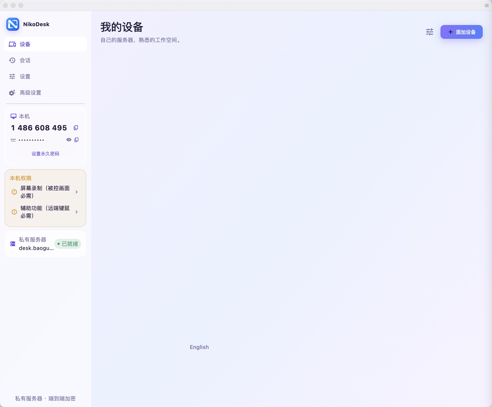
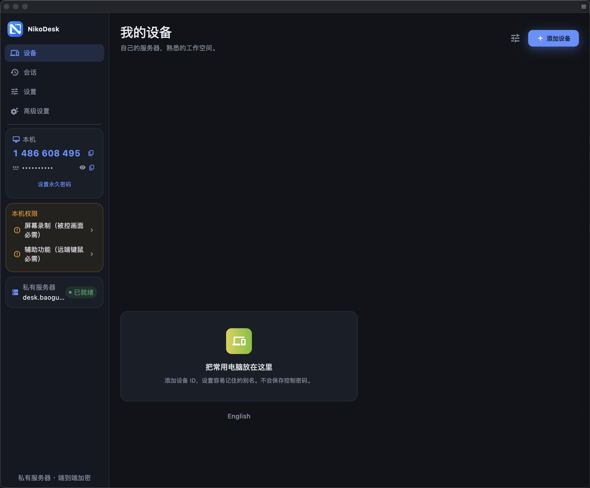
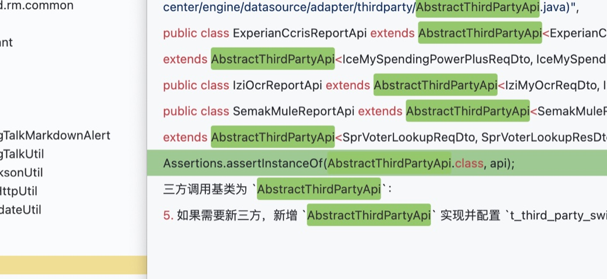

NikoDesk pairs a RustDesk-powered client with the rendezvous and relay you host yourself. No public cloud in the loop.


The same window, both themes. NikoDesk follows your system appearance and can be switched in settings.
Every remote desktop needs two services: a rendezvous server (hbbs) where devices register and find each other, and a relay (hbbr) that carries traffic when a direct connection is not possible.
With public tools, both belong to someone else. With NikoDesk, both run on your own machine: a NAS, a VPS, or any box you control. Sessions negotiate through your server, punch a direct hole when they can, and fall back to your relay when they cannot.
The private-server policy is compiled into the client. A NikoDesk build does not register with public rendezvous servers, so an experiment can never leak onto shared infrastructure.
Everything below ships in v1.0.0 today. Where something is not verified yet, the interface says so instead of pretending.

Entering an ID alone never dispatches a session. NikoDesk only connects when the remote password is present, so a typo can never ring someone else's machine.
A night console and a daylight canvas, following your system with a manual override in settings.
Device cards poll your own rendezvous every six seconds and show online, offline, or unknown. Unknown stays unknown.
The last 200 sessions are kept locally with one-tap reconnect, and sessions can be recorded for later review.
Check for updates inside the app. Downloads come only from GitHub Releases over HTTPS and install only when the SHA256 sum matches.
NikoDesk inherits end-to-end encrypted sessions from the RustDesk core and adds its own house rules.
Sessions require the remote password before connecting. Temporary and permanent passwords are managed on the controlled side.
Accepting an incoming session grants keyboard, mouse, clipboard and file transfer, each revocable per session. Audio stays off until you turn it on.
Registration and relay traffic point at the server you configure. The private-server-only build cannot fall back to public rendezvous.
Traffic prefers direct peer-to-peer connections; your relay sees encrypted frames only when punching fails.
Release artifacts are built by public GitHub Actions runs, hashed in SHA256SUMS, and installed by an updater that fails closed on any mismatch.
Update downloads accept HTTPS hosts on a fixed allowlist and re-validate after redirects.
NikoDesk speaks the open RustDesk server protocol. If you already run hbbs and hbbr, point the client at them and you are done.
Two containers on any Docker host. Keep the data volume so your key pair survives updates.
docker run -d --name hbbs -v /data:/root \ -p 21115:21115 -p 21116:21116 \ -p 21116:21116/udp -p 21118:21118 \ rustdesk/rustdesk-server hbbs docker run -d --name hbbr -v /data:/root \ -p 21117:21117 -p 21119:21119 \ rustdesk/rustdesk-server hbbr
Give the host a reachable name, forward the ports, and copy the public key from the data volume. A home line works with port forwarding or a WireGuard tunnel.
cat /data/id_ed25519.pub # point DNS at the host # keep tcp 21115-21119 open
Fill the same three fields on every device you trust. The connection test in settings tells you immediately whether registration succeeded.
ID server: desk.example.com Relay: desk.example.com:21117 Key: (id_ed25519.pub)
Free builds for v1.0.0, produced by public CI runs and hashed in SHA256SUMS.
First launch: right-click, Open, then grant Screen Recording and Accessibility.
Verify against SHA256SUMS on the releases page. All platforms check for updates in settings and install only when the hash matches. If GitHub is slow from your network, any mirror of the release assets works as long as the hash still matches.